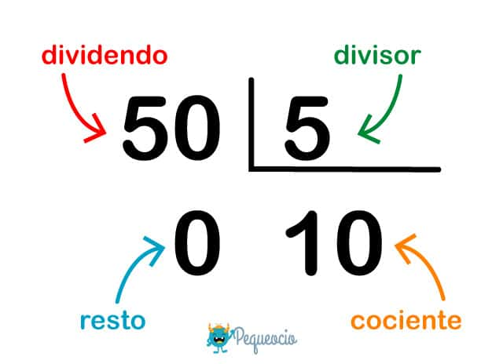

La división es aquella operación matemática mediante la cual se trata de descomponer un número, al que denominaremos dividendo, en tantas partes como así lo indique otro número, al que llamaremos divisor.
Operación Dividir
Aritmética basicas
¿Deseas aprender a dividir?

- Dividendo: Es el número que hay que repartir
- Divisor: Es el número entre el cual se divide el dividendo, es decir, las partes entre las que hay que repartir
- Cociente:Es el resultado de la división.
- Resto: Es el número que sobra cuando se termina de hacer la división.